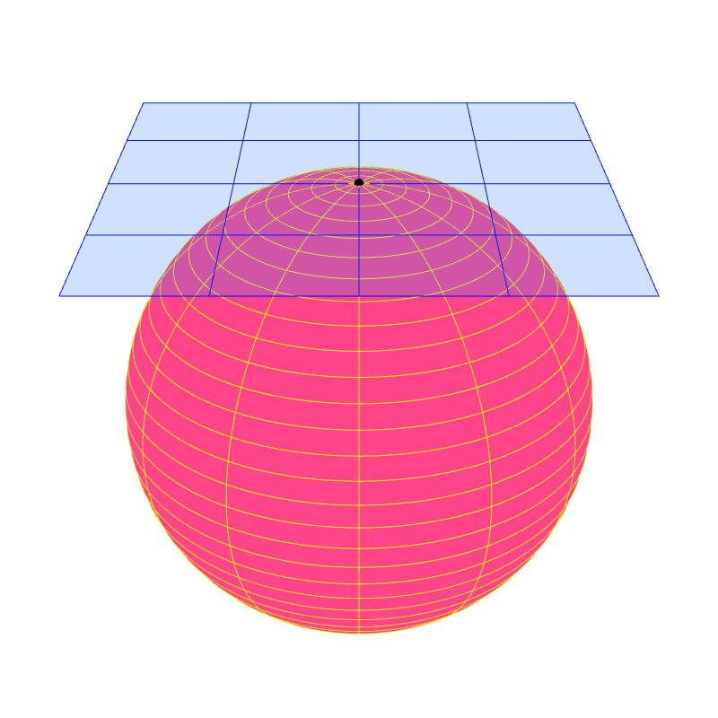
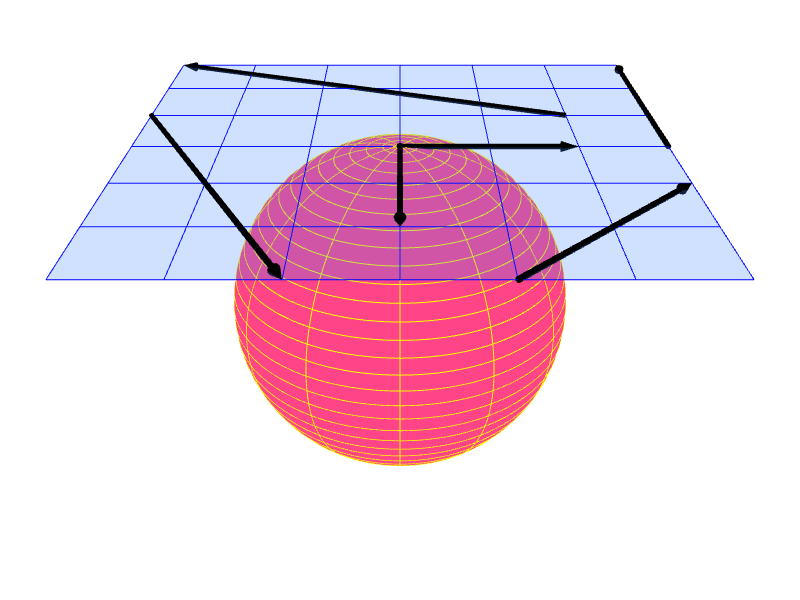
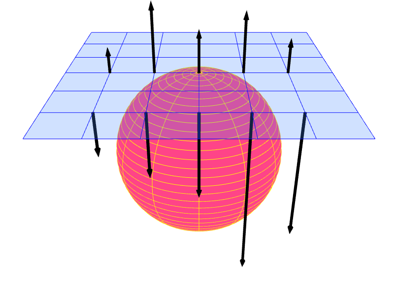

6 Normal vectors
We learned in the last chapter that we model shapes of objects by modeling their external surfaces. Normal vectors are common properties of surfaces that must be taken to account when creating any surface models.
We have seen the term "normal vector" before in Section 3.7.5. A normal vector to a plane is a vector that is perpendicular to it. A normal vector to a surface is a vector that is "perpendicular" to that surface in some sense. However, we have to be careful about its definition because a general surface is not completely flat like a plane, and so we cannot conveniently measure the angle between a vector and a surface to decide whether they are perpedicular to each other or not. (There is a way to extend the definition, of course!)
We care about normal vectors because they tell us about the "directions" of the surface. These directions can be used to perform (1) hidden surface removal (Chapter XXX) and (2) shading (Chapter XXX). Shading is largely about calculating how light interacts with a surface, and this interaction depends on the surface's geometry. The surface's directions, conveyed by normal vectors, are geometric information that plays a central role in lighting calculation.
Now, the confusing thing about normal vectors, at least in the field of computer graphics, is that there are multiple kinds of them. The normal vector we just talked about is called the surface normal vector. When we model shapes with triangle meshes, we deal with two more types: face normal vector and vertex normal vector. Let us now discuss them in turn.
6.1 Surface normal vectors
6.1.1 Normal vectors to a flat surface
A flat surface is a surface such that there is a 2D plane that contains it. Recall from Section 3.7.5 that a 2D plane in 3D space can be defined by (1) a point on the plane and (2) a vector called the "normal vector." The normal vector has the property that it is perpendicular to the plane, meaning that it is perpendicular to any vectors that is in that plane. Now, if a vector is perpendicalar to a plane, it is also perpendicular to any flat surface contained in that plane. So, we say that a normal vector to the plane is also a normal vector to the flat surface as well.
Let $\ve{n}$ be a normal vector to a flat surface. We know that it is not the only normal vector because because $2\ve{n}$, $3.14\ve{n}$, $-\ve{n}$, or any $c\ve{n}$ where $c \neq 0$ is also perpendicular to the flat surface.
{kind=link}
To avoid ambiguity about the length of normal vectors, we often require that normal vectors be unit vectors. In other words, we prefer only to talk about $\ve{n}$ such that $\ve{n} = 1$. With this restriction, we have that a flat surface has two distinct (unit) normal vectors, and they point in the exact opposite direction.

6.1.2 Orientation of a flat surface and "the" normal vector
The fact that there are two distinct normal vectors to a flat surface corresponds to the fact that surface has two sides. Now, we may choose to call one side the "front" side and the other the "back" side. This choice is arbitrary. After we have picked the side to call "front," we have decided the flat surface's orientation. In effect, we have chosen the way the flat surface is "facing." Picking the side to call "front" is equivalent to pick one of the two normal vectors to serve as "the" (one and only one) normal vector of the surface over the other. In this book, the normal vector is on the front side. In other words, the front side is the side we see when we look in the opposite direction of the normal vector. As a result, the choise of the normal vector reflects the orientation of a flat surface.
 |
||
| (a) | (b) |
{kind=link}
So, from now on, the normal vector of a flat surface is the unit vetor that:
- is perpendicular to the surface, and
- points away from the side we consider to be the front side.
Let us stress that the normal vector to a flat surface is perpendicular to that surface as a whole. This means that we can place the normal vector anywhere on the surface, and the normal would be perpendicular to the surface at that point.
6.1.3 Regular surfaces
Curved surfaces such as spheres, ellepsoids, torii are used by artists approximate shapes of 3D objects. These surfaces belong to a class of surfaces called regular surface where the notion of normal vectors are well defined.
{kind=link}
Intuitively, regular surfaces are surfaces that are "locally flat." This means that, when you pick a point on the surface and zoom in on it close enough, the surface in your vision should look flat. Another way to think about this is to imagine the surface to be very big and yourself to be a small creature standing on it. If the surface is a manifold, then it looks like you are standing on a flat plane. In fact, we all have this experience. The earth is round (i.e., its shape can be approximated quite well by a sphere or an ellipsoid), but we can hardly observe its curvature while standing at sea level. It took a long time for humanity to realize that the earth is not flat! (Sadly, some people believe it is even now.)
We will not, however, define the regular surface mathematically because doing so requires much mathematical machinery that we will not use again in the rest of the book.1
6.1.4 Tangent planes and surface normal vectors
A regular surface has a property that allows it to have normal vectors. Each point $P$ of the surface has a plane called the "tangent plane" that "touches" the surface at $P$. For other types of surfaces, the existence of tangent planes are not gauranteed.
Formally, a secant plane to a surface is a plane that passes through three points of the surface. Let $P$ be a point on a surface $S$. We can force the three points to be closer and closer to $P$. Taking the limit of this process, the secant plane may approach a unique plane that contains $P$. This plane, if it exists, is called the tangent plane at $P$. It is the plane that best approximates the surface around $P$ among all the other planes. For a regular surface, a tangent plane exists for every point. As a result, a regular surface appears locally flat because the surface can be approximated locally by tangent planes.
|  | ||
| (a) | (b) |
{kind=link}
{kind=link}
We say that a vector $\ve{v}$ is tangent to a surface $S$ at point $P$ if $\ve{v}$ lies in the tangent plane at $P$. We call such a vector $\ve{v}$ a tangent vector.
We say that a vector $\ve{n}$ is normal to a surface $S$ at point $P$ if the vector is perpendicular to the tangent plane at $P$. Such a vector is called a normal vector or a surface normal vector of $S$.
|  |  | |
| (a) | (b) |
{kind=link}
{kind=link}
If $S$ is a regular surface, then every point on it has a tangent plane and, consequentially, (infinitely many) normal vectors. Following the discussion in Section 6.1.1, we typically require that normal vectors be unit vectors. As a result, each point on $S$ has two normal vectors. One points away from the "front" side of the tangent plane, and the other from the "back" side.
6.1.6 Examples
Let us consider three simple regular surfaces and learn what their normal vectors and tangent planes are.
6.1.6.1 Plane
It is important to recognize that a plane is a regular surface. The plane is locally flat because it is globally flat. The tangent plane of the plane is the plane itself. The two unit normal vectors at all points are the same ones.
6.1.6.2 Infinite Cylinder
Let us consider an infinitely long cylinder or radius $r$ whose axis is the $z$-axis. The set of points that constitute the cylinder is given by $$ \{ (x,y,z) : x^2 + y^2 = r^2 \}.$$ Now, let $P = (p_x, p_y, p_z)$ be a point on the cylinder. It turns out that the vector $\ve{n} = (p_x,p_y,0)$ is a normal vector to the cylinder at $P$. So, the tangent plane at $P$ is given by: \begin{align*} &\{ (x,y,z) : ((x,y,z) - P) \cdot \ve{n} = 0 \} \\ &= \{ (x,y,z) : (x-p_x, y-p_y, z-p_x) \cdot (p_x, p_y, 0) = 0 \} \\ &= \{ (x,y,z) : (x - p_x)p_x + (y - p_y)p_y = 0 \} \\ &= \{ (x,y,z) : p_x x + p_y y - p_x^2 - p_y^2 = 0 \} \\ &= \{ (x,y,z) : p_x x + p_y y - r^2 = 0 \}. \end{align*} The last line follows from the fact that $(p_x,p_y,p_z)$ is a point on the cylinder, so it must be the case that $p_x^2 + p_y^2 = r^2$.
We can see a reason why the normal is $(p_x,p_y,0)$ by considering the cylinder's cross section. If we look at the intersection of the cylinder with the plane $z = p_z$, then we would see the cylinder's cross section as a circle of radius 1 whose center is the point $O = (0,0,p_z)$. The vector $(p_x, p_y, 0) = P - O$ is parallel to the line segment $\overline{OP}.$ Moreover, we know from Euclidean geometry that $\overline{OP}$ is perpendicular to the tangent line to the circle at $P$. So, $(p_x, p_y, 0)$ is perpendicular to the tangent line, which is a part of the tangent plane.
| (a) | (b) | |
| (c) | (d) |
{kind=link}
{kind=link}
{kind=link}
{kind=link}
Remember that $(p_x, p_y, 0)$ is but one of the infinitely many normal vectors at $P$. If $r \neq 1$, it is not a unit vector. If we restrict ourselves to talk only about unit normal vectors, then they are \begin{align*} \frac{\ve{n}}{\| \ve{n} \|} &= \frac{(p_x, p_y, 0)}{\sqrt{ p_x^2 + p_y^2 }} = \bigg( \frac{p_x}{r}, \frac{p_y}{r}, 0 \bigg), \\ -\frac{\ve{n}}{\| \ve{n} \|} &= \bigg( \frac{-p_x}{r}, \frac{-p_y}{r}, 0 \bigg). \end{align*}
6.1.6.3 Sphere
Consider the sphere whose radius is $r$ and whose center is the origin is the point $O = (o_x, o_y, o_z)$. The sphere is the set \begin{align*} \{ (x,y,y) : (x - o_x)^2 + (y - o_y)^2 + (z - o_z)^2 = r^2 \}. \end{align*} Let $P = (p_x, p_y, p_z)$ be a point on the sphere. The vector $$\ve{n} = P - O = (p_x - o_x, p_y - o_y, p_z - o_z)$$ is a normal vector to the sphere at $P$. As a result, the tangent plane at $P$ is given by \begin{align*} &\{ (x,y,z) : ((x,y,z) - P) \cdot \ve{n} = 0 \} \\ &= \{ (x,y,z) : (x-p_x, y-p_y, z-p_z) \cdot (p_x, p_y, p_z) = 0 \} \\ &= \{ (x,y,z) : p_x x + p_y y + p_z z - p_x^2 - p_y^2 - p_z^2= 0 \} \\ &= \{ (x,y,z) : p_x x + p_y y + p_z z - r^2 = 0 \}. \end{align*}
A reason why $\ve{n} = P-O$ is a normal vector at $P$ is quite similar to that of the cylinder's normals. There are infinitely many planes that pass through $O$ and $P$. Picking one, the intersection of the plane and the sphere yields a great circle. Euclidean geometry again tells us that $\overline{OP}$ (and also $\ve{n}$) is perpendicular to the tangent line at $P$, which is a part of the tangent plane.
| (a) | (b) | |
| (c) | (d) |
{kind=link}
{kind=link}
{kind=link}
{kind=link}
6.1.7 Orientation of regular surfaces
In Section 6.1.2, we learned that the two unit normal vectors to a plane correspond to the plane's two sides. Moreover, we often pick one unit normal vectors to serve as "the" normal vector of the plane and thereby pick which side of the plane is the front side.
We can do the same to a regular surface. However, instead of picking only one unit normal vector, we need to pick a unit normal vector at each point on the surface because the tangent planes of different points can be different.
Because a regular surface contains infinitely many points, there are infinitely many decisions to make and therefore infinitely many ways to assign a unit normal vector to each point on the surface (Figure 6.9a). Nevertheless, the assignments are not equally good. We generally prefer assignments such that the normal vectors vary continuously across the surface. Such assignments are much easier to understand, and they avoid the problem of normal vectors dramatically switch direction as one move continuously from one point to another on the surface (Figure 6.9b). A consistent way to assign a unit normal vector at each point on the surface such that the normals vary continously is called an orientation of that surface (Figure 6.9c and 6.9d). If such as an assignment exist for a surface, we say that the surface is orientable.
| (a) | (b) | |
| (c) | (d) |
{kind=link}
{kind=link}
{kind=link}
{kind=link}
Regular surfaces that we have discussed so far—planes, infinite cylinders, spheres, and tori—are all orientable. A property of orientable surfaces is that they have two sides (Figure 6.10). The sides the normal vectors are on is the front, and the other side is the back.
{kind=link}
An interesting fact is that not all surfaces are orientable. The Möbius strip is such a surface. If we pick a normal vector, say $\ve{n}$, for a point $P$, we find a loop on the surface that starts at $P$ and goes back $P$ that also forces us to pick $-\ve{n}$ as the normal vector at $P$ as well. In a sense, the Möbius strip is not orientable because it has only one side. In this book, we will not deal with unorientable surfaces.
{kind=link}
Now, consider an orienable surface that is also closed, like a sphere. The surface splits space into two regions: the inside and the outside. The surface also has two sides: the front and the back. In computer graphics, it is common to require that the front side lies on the outside, or, in other words, the the normal vectors of a closed, orientable surface should point outward. In other words, we prefer the orientation in Figure 6.9c over the one in Figure 6.9d. As a result, for the infinite cylinder in Section 6.1.6.2, we prefer $(p_x/r, p_x/r, 0)$ over $(-p_x/r, -p_x/r, 0)$ as the normal vector because $(p_x/r, p_x/r, 0)$ points outside. For the sphere in Section 6.1.6.3, we prepare $(p_x/r, p_y/r, p_z/r)$ over $(-p_x/r, -p_y/r, -p_z/r)$ for the same reason.
Before going to the next section, let us take stock. We care about surface normal vectors because they inform us about the surface's geometry: the normal vector at a point on the surface immediately tells us what the tangent plane at that point is, and the tangent plane can be used to approximate the surface near the point. The normal vector also allows us to distinguish between the front and back sides of the surface. The knowledge is used for hidden surface removal (Chapter XXX), and it also allows us to shade the front side and the back side differently (Chapter XXX). Moreover, when the surface is closed, it also tells us which part of space is the inside and which is the outside. This is important for lighting calculation that involves the use of Snell's law (Chapter XXX).
6.2 Face normal vectors
Face normal vectors are surface normal vectors when the surface is a mesh. While the graphics pipeline can only deal with triangle meshes, other 3DCG software (especiallying modeling software such as Blender, 3ds Max, or Maya) allows meshes where the primitives are general polygons: quadriliterals, pentagons, heptagons, and so on. Each polygon in a mesh is called a face. We will follow this nomenclature and call a triangle in a mesh a face too. A face normal vector is just a normal vector to a face.
6.2.1 The normal vector to a triangle
When we specify a triangle, say $ABC$, we need to list its corner points in some order. Here, $A$ denotes the first corner, $B$ the second, and $C$ the third.
Example 6.1 For example, in the triangle mesh of Section 5.4.1, the $ABC$s of the two triangles are as follows:
- Triangle #1
- $A = $ Vertex #0 $= (0,0,0)$.
- $B = $ Vertex #1 $= (1,0,0)$.
- $C = $ Vertex #2 $= (1,1,0)$.
- Triangle #2
- $A = $ Vertex #0 $= (0,0,0)$.
- $B = $ Vertex #2 $= (1,1,0)$.
- $C = $ Vertex #3 $= (0,1,0)$.
We know from Section 3.7.5 that the vector \begin{align*} \widetilde{\ve{n}} = (B - A) \times (C - A) \end{align*} is a vector that is perpendicalar to the triangle. Dividing the vector by its length, we have that \begin{align*} \widehat{\ve{n}} = \frac{\widetilde{\ve{n}}}{\| \widetilde{\ve{n}} \|} = \frac{(B - A) \times (C - A)}{ \| (B-A) \times (C-A) \|} \end{align*} is a unit vector that is perpendicular to the triangle. However, we also know that \begin{align*} -\widehat{\ve{n}} = -\frac{(B - A) \times (C - A)}{ \| (B-A) \times (C-A) \|} = \frac{(C - A) \times (B - A)}{ \| (C-A) \times (B-A) \|} \end{align*} is another unit vector that is perpedicular to the triangle. Between $\widehat{\ve{n}}$ and $-\widehat{\ve{n}}$, which one we should pick as the normal vector of the triangle then?
In this book, we shall follow the convention is that the normal vector of triangle $ABC$, denoted by $\ve{n}$, is given by \begin{align*} \ve{n} = \widehat{\ve{n}} = \frac{\widetilde{\ve{n}}}{\| \widetilde{\ve{n}} \|} = \frac{(B - A) \times (C - A)}{ \| (B-A) \times (C-A) \|}. \end{align*}
Example 6.2 The normal vectors of the triangles of the mesh in Section 5.4.1 are as follows. \begin{align*} \mbox{Normal of Triangle #1} &= \frac{ \left( \begin{bmatrix}1 \\ 0 \\ 0\end{bmatrix} - \begin{bmatrix}0 \\ 0 \\ 0\end{bmatrix} \right) \times \left( \begin{bmatrix}1 \\ 1 \\ 0\end{bmatrix} - \begin{bmatrix}0 \\ 0 \\ 0\end{bmatrix} \right) }{\left\| \left( \begin{bmatrix}1 \\ 0 \\ 0\end{bmatrix} - \begin{bmatrix}0 \\ 0 \\ 0\end{bmatrix} \right) \times \left( \begin{bmatrix}1 \\ 1 \\ 0\end{bmatrix} - \begin{bmatrix}0 \\ 0 \\ 0\end{bmatrix} \right) \right\|} \\ &= \frac{ \begin{bmatrix}1 \\ 0 \\ 0\end{bmatrix} \times \begin{bmatrix}1 \\ 1 \\ 0\end{bmatrix} }{\left\| \begin{bmatrix}1 \\ 0 \\ 0\end{bmatrix} \times \begin{bmatrix}1 \\ 1 \\ 0\end{bmatrix} \right\|} = \frac{ \begin{bmatrix}0 \\ 0 \\ 1\end{bmatrix} }{\left\| \begin{bmatrix}0 \\ 0 \\ 1\end{bmatrix} \right\|} = \begin{bmatrix}0 \\ 0 \\ 1\end{bmatrix}. \\ \mbox{Normal of Triangle #2} &= \frac{ \left( \begin{bmatrix}1 \\ 1 \\ 0\end{bmatrix} - \begin{bmatrix}0 \\ 0 \\ 0\end{bmatrix} \right) \times \left( \begin{bmatrix}0 \\ 1 \\ 0\end{bmatrix} - \begin{bmatrix}0 \\ 0 \\ 0\end{bmatrix} \right) } { \left\| \left( \begin{bmatrix}1 \\ 1 \\ 0\end{bmatrix} - \begin{bmatrix}0 \\ 0 \\ 0\end{bmatrix} \right) \times \left( \begin{bmatrix}0 \\ 1 \\ 0\end{bmatrix} - \begin{bmatrix}0 \\ 0 \\ 0\end{bmatrix} \right) \right\| } \\ &= \frac{ \begin{bmatrix}1 \\ 1 \\ 0\end{bmatrix} \times \begin{bmatrix}0 \\ 1 \\ 0\end{bmatrix} } { \left\| \begin{bmatrix}1 \\ 1 \\ 0\end{bmatrix} \times \begin{bmatrix}0 \\ 1 \\ 0\end{bmatrix} \right\| } = \frac{ \begin{bmatrix}0 \\ 0 \\ 1\end{bmatrix} }{ \left\| \begin{bmatrix}0 \\ 0 \\ 1\end{bmatrix} \right\| } = \begin{bmatrix}0 \\ 0 \\ 1\end{bmatrix}. \end{align*} The normal vectors are the same. This is good because these two triangles are used to form a square, another flat surface. The square should have one normal vector rather than two.
A consequence of basing the normal vector $\ve{n}$ on $(B-A) \times (C-A)$ rather than other calculation is that one can determine the direction of the normal vector by looking at how the triangle's corners "swirl."
This is the because the direction of $(B - A) \times (C - A)$ is determined by the right-hand rule. Recall from Figure 3.19 that the direction of $(B - A) \times (C - A)$ depends on the rotation to get from $B-A$ to $C-A$. If the rotation is counterclockwise when we look at it, the cross production points towards us. If the rotation is clockwise, then the cross product points away from us.
Equivalently, we can trace the corners of the triangles in the specified order: from $A$ to $B$ to $C$ and then back to $A$ again. If the we see that the motion is a counterclockwise "swirling," then the triangle's normal vector would point towards us, and we are seeing the front side of the triangle. On the other hand, if the swirling is clockwise, the normal vector points away from us, and we are seeing the back side of the triangle.
| (a) | (b) | (c) |

|
||
| (d) | (e) | (f) |
{kind=link}
{kind=link}
{kind=link}
{kind=link}
{kind=link}
6.2.2 Consistency of face normals
In Section 6.2.1, we consider the normal vector of a single triangle, which is determined by the order in which its corners are specified. When a triangle is a part of a mesh, the order of corners is determined by the order of the vertex indices in the index buffer. So, the order of vertex indices in the index buffer determines the direction of the normal vectors and the orientation of the faces.
There are as many normal vectors to a triangle mesh as there are faces. We want the face normals to be consistent to one another. The notion of consistency in question is inpired by the consitency of normal vectors in an orientation of a regular surface. It should be that, as we travel along the surface the normal vectors should not change abrubtly. To put it in another way, if we are a small creature standing on the front side of a mesh's face, we should not suddenly be on the back side if we walk to an adjacent face.
The above notion of consistency requires that the orders of vertex indices of the triangles be consistent with one another. More specifically, all triangles should swirl in the same way. If the vertices of a triangle swirl counterclockwisely, the vertices of all the other triangles should also do so.
6.3 Vertex normals
-
A mathematically inclined reader can consult standard textbooks on differential geometry such Manfredo P. do Carmo's Differential Geometry of Curves and Surfaces for a rigorous definition of regular surfaces.